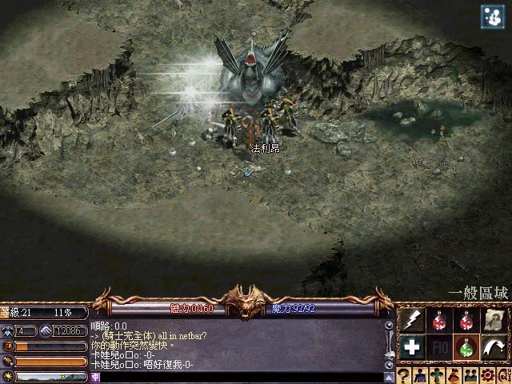
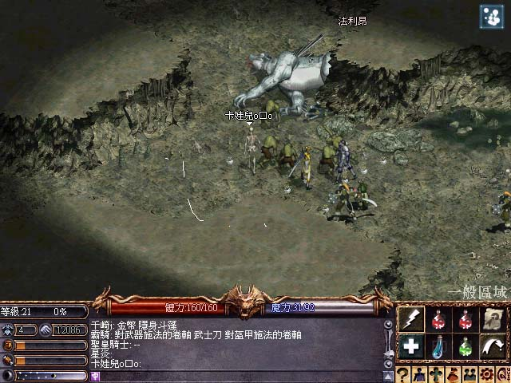
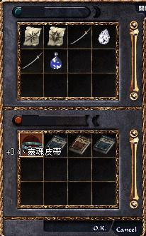

|
2002年8月5日
香港伺服器水龍被擊倒實錄
相信大家都知道在冰鏡湖更新後將會有很嚴重的藥水頻率使用限制，因此在更新前很多玩家都嘗試去挑戰天堂各大龍，而香港伺服器的水龍最近已經被玩家成功擊倒！據本網消息得知，太陽神的水龍總共被殺死了5次，時間約為7月29日6:00am及7:30am，7月31日3:00am，9:00am及3:30pm，期後100小時內都沒有出現水龍了，因此可能被官方鎖了。這次水龍比較重要的是總共掉下了5件隱件，5把祝瑟劍及6+9+10+9+9=43塊水龍鱗（其中30塊已經製作了兩件水龍甲），以下是部分太陽神伺服器打龍的抓圖（愛神的水龍應該在8月2日2:00pm左右被殺死了，如果有圖或資料請電郵給本網）：
第一次水龍被殺死：2002年7月29日約6:00am

第二次水龍被殺死：2002年7月29日約7:30am

第三次水龍被殺死：2002年7月31日約3:00am
第四次水龍被殺死：2002年7月31日約9:00am
第五次水龍被殺死：2002年7月31日約3:30pm
水龍掉下的寶物：

與火龍戰鬥的激烈圖片：
|